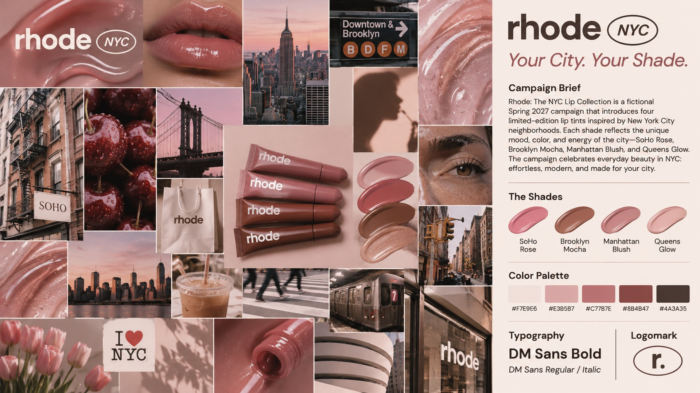

Your City.
Your Shade.
Rhode: The NYC Lip Collection is a fictional beauty campaign inspired by the everyday colors, energy, and individuality of New York City.
Campaign brief
For Spring 2027, Rhode introduces a fictional collection of four limited-edition lip tints inspired by New York City neighborhoods: SoHo Rose, Brooklyn Mocha, Manhattan Blush, and Queens Glow. Each shade reflects a different side of the city—from soft pink mornings to warm brownstone tones. The campaign celebrates effortless beauty, self-expression, and finding a shade that feels like your city.
Creative direction: Minimal and modern, with glossy makeup textures, warm natural light, city streets, subtle editorial typography, and a soft rose-and-mocha color story.
Moodboard
A collage of 20+ beauty, lifestyle, architecture, texture, and product visual references. The moodboard explores the contrast between glossy beauty imagery and the lived-in character of NYC.

Moodboard artwork created with AI for this fictional student campaign. 1920 × 1080 px. Not an official Rhode collaboration.
Color palette
Warm neutrals and rosy tones inspired by lip color, city sunsets, and Brooklyn brownstones.
Typography
DM Sans is the campaign typeface. Bold weights create a clean, confident headline; regular weights keep the copy simple and approachable.
Headline: DM Sans 700 · Body: DM Sans 400 · Minimal letter spacing and generous white space.
Logomark
A proposed NYC capsule identity pairs the Rhode-inspired wordmark with an oval NYC stamp. A simple lowercase “r.” inside an oval can also work as a small campaign icon.
Conceptual student artwork; the Rhode name is used for an unofficial fictional campaign.